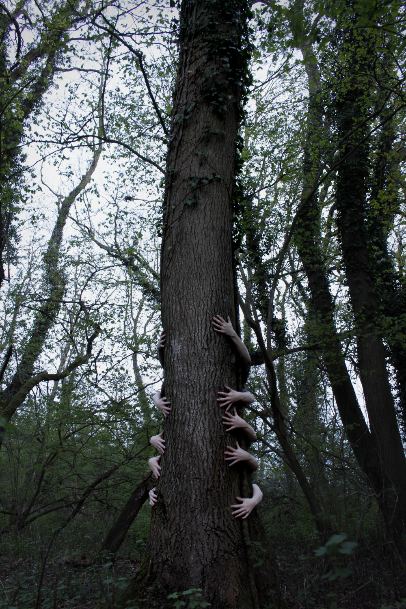
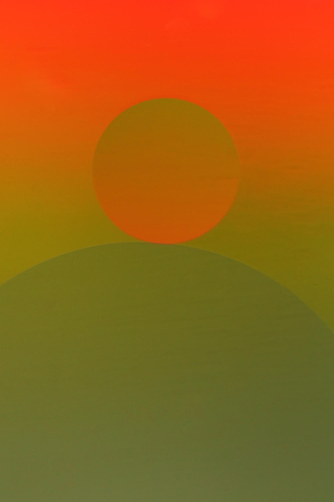
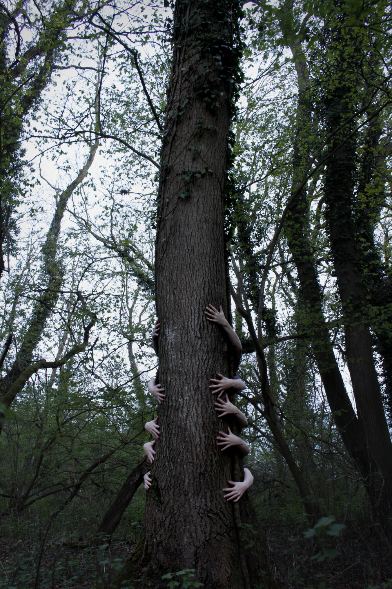
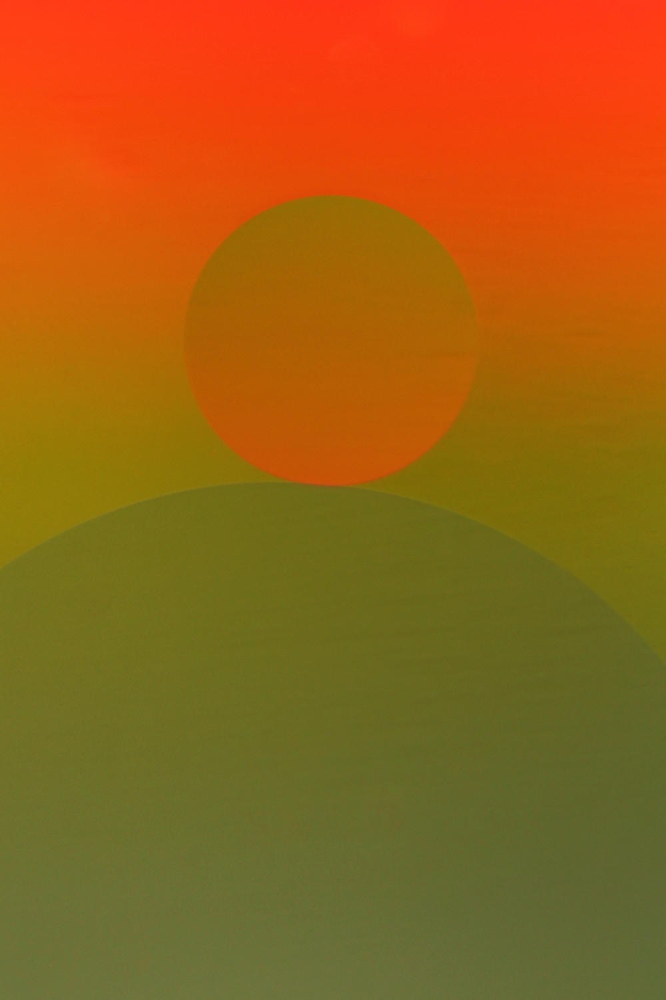
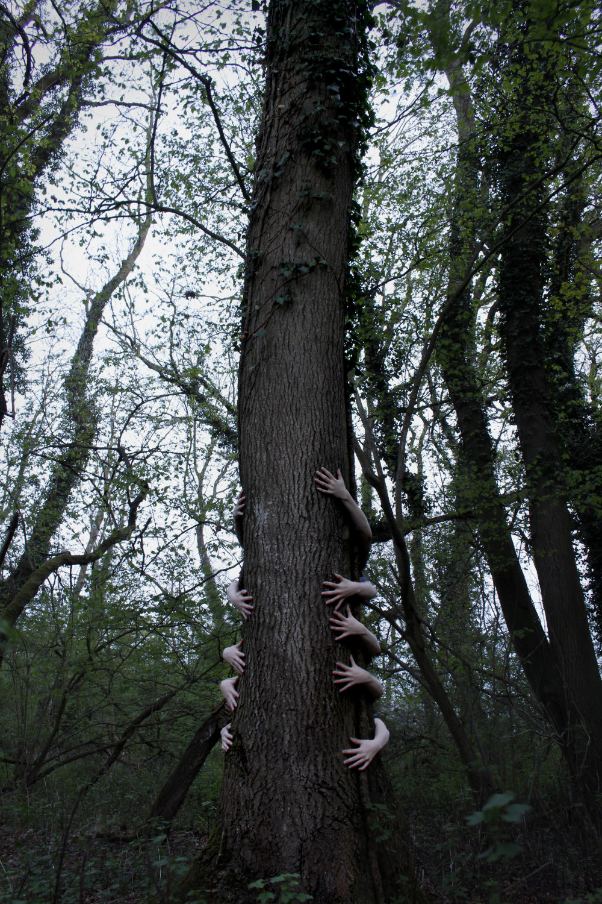
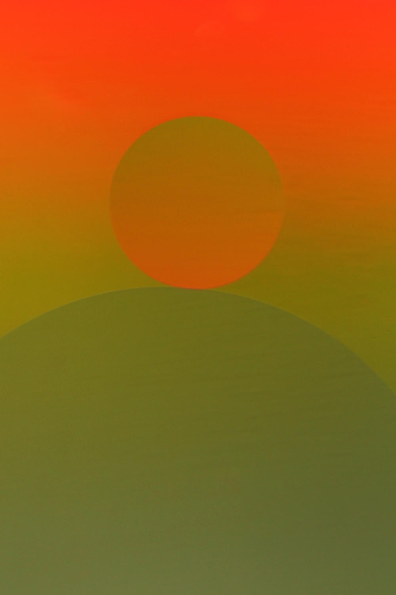

Here are a selection of some of my favourite still life images, demonstrating the different styles and techniques that I use in my work.
Still life photography is one of my favourite areas of photography. I enjoy the setup required for these kind of images, taking into consideration all sorts of different creative elements to enhance and perfect an image. Unlike portrait images, still life objects don't move - making the setup a lot easier!
At A-Level I was able to experiment with a range of different photographic techniques, and apply these to all sorts of still life objects. From shells, to roses, to old tins, I was able to create well balanced images from a range of different objects found in and around the house.
I also enjoyed experimenting with depth of field to create different effects. Using a 50mm lens, I was able to achieve an extremely shallow depth of field, helping me to create unique and interesting images that lead the viewer in.
As well as in camera experimentation, I also trialled different Photoshop techniques. This included levels adjustments to create more well-balanced images, and image stacking to apply weird and wonderful effects!

